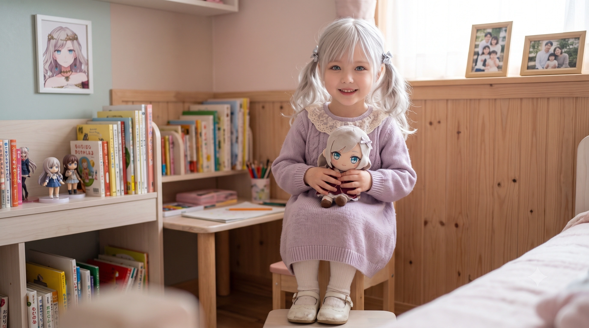

효빈광역시 서구 청덕1동에 위치한 초고층 프리미엄 주상복합 대단지 아파트. 청덕 레인보우타운, 청덕 세라스 아파트(판타지 엘프 혼종)와 함께 청덕지구를 대표하는 3대장 아파트 중 하나이다. 조용하고 따뜻한 느낌의 레인보우타운과는 정반대로, 가장 스포티하고 트렌디하며 텐션이 미쳐 돌아가는 아파트로 악명(?)이 높다.
부산 해운대 엘시티와 유사하게, 하부의 거대한 포디움(Podium) 상업시설 위에 여러 개의 주거 타워가 솟아오른 전형적인 주상복합 구조를 취하고 있다.
지상 35층 규모의 주거 동 10개가 웅장하게 서 있다. 각 동의 도색이 절반은 로열 블루(아사카 카린), 절반은 울트라 오렌지(미야시타 아이)로 칠해져 있어 맑은 날 밖에서 보면 눈이 부실 정도로 색채 대비가 강렬하다. 내부 설계 역시 젊고 트렌디한 감각에 맞춰 통유리창과 개방감 있는 구조로 설계되었다.
아파트 하부 지하 1층부터 지상 6층까지의 거대한 기단부는 '청덕 다이버시티몰'이라는 대규모 복합 상업시설로 묶여있다. 부산 해운대 엘시티(LCT)의 포디움이 1~3층 대규모 상업시설과 4~6층 워터파크로 구성된 것을 완벽하게 벤치마킹하여, 다이버시티몰 역시 하층부에 쇼핑, 문화 시설을, 상층부에 스포츠와 워터파크 시설을 집중 배치했다.
| 청덕 다이버시티몰 층별 안내 | |
|---|---|
| 4층 ~ 6층 | 도심형 실내외 워터파크 & 스파 '다이버 오아시스 (Diver Oasis)', 대형 인피니티 풀 |
| 3층 | 글로벌 스포츠 브랜드, 대형 피트니스 센터(DIVER GYM), 프리미엄 푸드코트 |
| 2층 | 글로벌 SPA 브랜드, 트렌디 패션 & 디자이너 편집숍, 뷰티 라운지 |
| 1층 | 럭셔리 라이프스타일, 안내데스크(로비), 대형 스타벅스, 팝업스토어 광장 |
| 지하 1층 ~ 지하 5층 | 아파트 및 상가 전용 대형 주차장, 기계실, 창고 |
특히 엘시티 더 몰이 개별 분양 방식으로 인해 임대 통제가 되지 않아 '유령 상가' 논란을 겪은 것을 철저한 반면교사로 삼았다. 효빈도시공사는 상가를 절대 개별 분양하지 않고 100% 직영 임대 및 기획 체제로 통제하여, 트렌디한 스포츠 브랜드, 대형 패션 편집숍, 인기 푸드코트만을 전략적으로 입점시키는 데 성공했다.
이 쇼핑몰을 초기의 공실 우려를 깨고 효빈시 최고의 핫플레이스로 만든 일등 공신은 다름 아닌 강하애(미야시타 아이 오시)와 조향림(아사카 카린 오시) 콤비다. 두 사람은 각자의 오시 캐릭터가 모티브인 이 공간을 마치 제 안방처럼 드나들었다.
피지컬 괴물인 강하애는 3층 스포츠 매장에서 신상 트레이닝복을 휩쓸고, DIVER GYM과 4층 '다이버 오아시스' 워터파크에서 살다시피 하며 무한 체력을 과시했다. 반면, 모델 지망생이자 완벽한 비율을 자랑하는 조향림은 2층 패션 편집숍 복도를 런웨이처럼 휘젓고 다니며 몰 방문객들의 시선을 한 몸에 받았다.
다이버시티몰 직영 상인회는 이 두 명의 압도적인 피지컬과 화제성(하애의 미친 인싸력과 텐션, 향림의 섹시한 모델 포스)을 눈여겨보았다. 상인회 측은 두 사람에게 접근하여 파격적으로 쇼핑몰의 공식 홍보대사 직을 제안하며 위촉했다.
마케팅 효과는 폭발적이었다. 강하애가 마이크를 잡고 "다이버시티몰에 오면 다 이뻐(Diver)지지! 안 오면 후회할 텐데 오렌지? 꺄하핫!" 같은 기막힌(?) 아재개그 마케팅으로 젊은 손님들을 끌어모았고, 조향림이 1층 팝업스토어 광장과 야외 페스티벌 광장에서 주말마다 게릴라 모델 워킹 이벤트를 열면서 에브리타임과 SNS에서 대폭발을 일으킨 것이다. 이 두 명의 '인간 다이버디바' 활약 덕분에 청덕 다이버시티몰은 완벽하게 상권을 방어하고 효빈시 2030 세대가 가장 많이 찾는 랜드마크로 거듭났다.
청덕 다이버시티몰이 세워진 이 황금 부지에는, 현재 '청덕동 영애'로 불리는 유세라 일가의 눈물겹고 파란만장한 20년 역사가 얽혀있다. 참고로 유세라 가문이 거주하는 펜트하우스는 바로 인근의 청덕 세라스 아파트이지만, 아버지가 운영하며 가문에 막대한 부를 창출해 준 핵심 상가 지분은 바로 이곳 청덕 다이버시티몰에 자리 잡고 있다.
세라가 겨우 6살이 되던 해인 2014년, 아버지의 뼈아픈 사업 실패가 터지면서 가족은 효빈시 서구의 낡고 습한 주택가 반지하 방으로 쫓기듯 이사 와야 했다. 당시 배정받은 학교는 지옥의 족포초등학교. 폐쇄적이고 질 나쁜 문화로 악명 높았던 족포초에서, 이국적인 외모(은발, 벽안)를 가진 세라는 전학 첫날부터 심각한 배척과 따돌림을 당했다.
"머리 색깔 이상해", "외국인 냄새 나", "더러운 튀기(혼혈 비하)"라는 초등학생이라고는 믿기 힘든 패륜적인 폭언과 이지메가 쏟아졌다. 특히 세라의 독일인 어머니가 학부모 참관 수업에 찾아왔을 때, 질 낮은 학부모들과 무능한 교사들마저 뒤에서 수군거리는 미개한 촌극이 벌어졌다. 어린 세라는 이 잔인한 시선들을 견디다 못해 아예 책을 덮고 학업을 포기해버렸다. 선생님의 지시도 무시하고 수업 시간에 엎드려 마음의 문을 굳게 닫은 채 매일 화장실에 숨어 울었으며, 방과 후에는 도피처인 엘린지역아동센터(지아센) 구석에 혼자 웅크려 겉돌아야만 했다.

그 지옥 같은 지아센에서 겉돌던 그녀를 구원해 준 사람은 당시 사회복무요원 입대를 앞두고 15학번 파란색 과잠을 입은 채 근로장학 멘토링을 하던 대학생 박효빈이었다.
박효빈 본인 역시 필리핀 어머니를 둔 다문화 가정 출신이었기에, 세라가 겪는 혼혈의 아픔과 족포초의 쓰레기 같은 문화를 누구보다 잘 이해하고 뼈저리게 공감했다. 첫날부터 다른 아이들이 낯을 가릴 때도, 세라는 효빈의 커다란 손을 덥석 잡고 "선생님, 저랑 토끼 인형 놀이 해줘요!"라며 완벽한 '껌딱지 모드'로 들러붙는 폭풍 애교를 선보였다.
하지만 영락없는 애교쟁이인 줄만 알았던 세라에게도 남모를 굴곡이 있었다. 어느 날 세라가 인사도 없이 구석에 숨어 "저한테 오지 마세요. 쌤이랑 안 놀 거예요"라며 차갑게 얼어붙은 목소리로 효빈을 밀어낸 날이 있었다. 단순한 투정인 줄 알았던 박효빈은 세라의 손등에 난 상처를 보고 무릎을 꿇고 다가갔다. 세라는 그제야 오열하며 "애들이 화장실에서 저한테 걸레 빤 물 뿌렸어요... 제가 엄마 닮아서 외국인이라 진짜 더러워서 그래요...?"라며 참았던 절규를 토해냈다.
이 어둡고 우울했던 지아센 시절, 세라에게 손을 내밀어 준 또 다른 은인이 있었다. 바로 병마와 싸우느라 학교를 거의 다니지 못해 차상위계층으로 전락했던 동기, 하화연(히노시타 카호 오시)이었다.
원작에서 카호와 세라스가 '병원 친구'로 인연을 맺었던 것처럼, 현실에서는 지아센 구석에서 웅크리고 있던 세라에게 화연이 먼저 다가갔다. 화연은 자신이 병실에 갇혀 지내야 했던 경험을 털어놓으며, 혼혈이라는 이유로 우울해하는 세라의 손을 꽉 잡았다. "세라 쨩! 내가 병원에 오래 있어서 아는데, 가만히 우울해하면 마음의 병균이 더 좋아해! 나랑 같이 햇볕 쬐면서 뛰놀자 큥!"
박효빈 쌤이 든든한 물리적 방패막이가 되어주었다면, 하화연은 세라의 차가운 멘탈에 햇볕을 비춰준 따뜻한 구원자였다. 화연이 세라를 억지로 양지로 끌어내어 같이 뛰놀게 만든 덕분에, 두 사람은 평생의 절친이 되었고 지금까지도 서로의 멘탈을 챙겨주는 완벽한 '카호세라'의 상호 구원 서사를 완성했다. [3]
하지만 이 평화는 박효빈이 사회복무요원 복무를 위해 지아센 근로장학을 완전히 종료하면서 산산조각 났다. 마지막 날, 박효빈이 "이제 쌤은 나라의 부름을 받고 군대(대체복무) 가야 해"라고 조심스레 말하자, 세라는 박효빈의 바짓가랑이를 붙잡고 눈물을 펑펑 쏟으며 매달렸다.
세라는 겉으로는 "쌤이 제일 재밌단 말이에요!"라며 4차원적으로 칭얼댔지만, 그 속내는 사실 '쌤이 가면 날 지켜줄 사람이 없잖아요, 나 혼자 어떻게 버텨요'라는 극도의 두려움과 애정이 섞인 절규였다. 부모님이 밤늦게까지 고생하는 걸 알아서 선뜻 학교폭력을 당하고 있다는 말조차 못 했던 착하고 주눅 든 아이였기 때문이다.
박효빈 역시 집으로 돌아가는 버스 안에서 '내가 저 아이를 너무 보호하기만 해서 자립심을 앗아간 게 아닐까? 내가 떠나면 저 험한 족포초에서 세라가 어떻게 버틸까...'라며 지독한 자책감과 깊은 시름에 잠겨야만 했다. [4]
박효빈 쌤이 떠나자, 방패막이가 사라진 일진들의 괴롭힘은 봇물 터지듯 다시 쏟아졌고 수위는 더 악랄해졌다. 아버지는 한국인이지만 어머니가 독일인이라는 이유만으로 "더럽다", "꺼져라"며 모욕을 당한 세라는, 화장실에 갇혀 오물 테러를 당한 날 견디다 못해 결국 박효빈의 마지막 조언을 떠올렸다.
부모님이 고생하는 것을 알아 꾹꾹 참아왔던 세라는, 결국 그날 밤 일과를 마치고 돌아온 독일인 어머니에게 자신이 학교에서 당한 모든 끔찍한 수모를 오열하며 털어놓았다. 딸의 참혹한 상황을 알게 된 부모님은 억장이 무너지는 슬픔과 분노를 삼키며 즉시 빚을 내서라도 이사를 결심했고, 3학년 때 세라는 도망치듯 서구 청덕초등학교로 전학을 가게 되었다. 다행히 학군이 상대적으로 양호하고 개방적이었던 청덕초에서는 좋은 친구들을 만나 무사히 적응하며 상처를 치유할 수 있었다.
세라가 초등학교 고학년이 되었을 무렵인 2019년 말경, 한국 부동산 역사상 전무후무할 기적 같은 인생 역전(로또)이 일어났다. 사실 이 기적의 씨앗은 세라가 태어나기도 한참 전인 2000년으로 거슬러 올라간다. 이 20년의 서사는 그야말로 피 말리는 롤러코스터이자 효빈시 부동산 잔혹사의 축소판이었다.
당시 세라의 아버지는 잘나가던 비디오테이프 및 DVD 유통, 그리고 대여점 자재 공급망을 쥐고 있던 중견 유통업자였다. 그는 당시 최대의 인구 밀집 구역이자 대형 수요처였던 과진동과 당선동으로의 납품이 용이하다는 점에 착안해, 당시 치안이 불안정한 슬럼가라 땅값이 헐값이던 청덕동 한복판의 대형 창고 부지를 덜컥 매입했다. 당시만 해도 "나중에 5호선 전철만 뚫리면 여기가 물류의 중심이 될 것"이라는 원대한 꿈이 있었기 때문이다.
하지만 이 선택은 가족의 인생을 시궁창으로 처박는 지옥문이 되고 말았다. 2000년대 중후반부터 효빈시 서구 인구는 끝없는 폭락을 거듭했고, 영원할 줄 알았던 과진동·당선동 상권도 함께 무너져 내렸다. 설상가상으로 2011년에 드디어 기다리고 기다리던 5호선(청덕공원역 등)이 개통되어 완벽한 '초역세권'이 되었음에도 불구하고, 부지 바로 옆에 똬리를 튼 사이비 종교 단체가 진입로를 완전히 틀어막고 깽판을 치는 바람에 역세권의 이점은커녕 매일 길바닥에 버리는 물류비용과 유류비만 산더미처럼 쌓여갔다.
무엇보다 시대의 변화가 가장 잔인했다. 2010년대에 접어들며 초고속 인터넷 망을 통한 IPTV와 VOD 서비스가 가정집을 장악했고, 스마트폰마저 보급되자 비디오/DVD 대여 사업은 말 그대로 '시장 자체가 지구상에서 증발'해버리는 멸망을 맞이했다. 수만 장의 재고가 쌓인 청덕동 창고는 파리만 날리는 폐허가 되었고, 결국 2014년, 세라가 겨우 6살이 되던 해 아버지는 최종 파산 선고를 받고 말았다. 수십억의 자산을 굴리던 집안은 하루아침에 빚잔치를 벌인 뒤, 곰팡이가 피고 꼽등이가 출몰하는 서구의 낡은 반지하 방으로 쫓겨나며 지독한 빈곤의 나락으로 떨어졌다. [5]
"그럼 그 초역세권 청덕동 창고 땅이라도 팔아서 빚을 갚으면 되지 않았나?" 싶겠지만, 팔고 싶어도 단돈 만 원에조차 팔 수가 없는 최악의 저주받은 맹지(盲地)였다.
당시 청덕동 일대는 2012년부터 대대적인 재개발 떡밥이 돌며 건설사들이 눈독을 들이고 있었으나, 하필 세라 아버지의 부지 바로 옆에 악명 높은 극우 성향의 초대형 사이비 종교 단체가 떡하니 본진을 삼고 있었기 때문이다. 이 미친 사이비 교단은 청덕 다이버시티 부지 일대의 재개발을 결사반대하며, 포크레인 앞에 드러눕기, 용역들과의 화염병 투척전, 신도들을 동원한 24시간 철야 쇠사슬 농성 등 온갖 기괴하고 폭력적인 알박기를 시전하고 있었다. 역이 바로 코앞에 있는데도 들어갈 길이 없는 기형적인 상태가 수년째 방치된 것이다.
이처럼 5호선 역세권이라는 미친 입지에도 불구하고, 저 미친 사이비 집단의 똥고집과 폭동 탓에 세라네 땅은 거래 자체가 완전히 동결되었다. 심지어 주변 구역만 찔끔찔끔 쪼개기 개발이 진행되는 동안, 세라네 땅은 마치 도심 한가운데 버려진 고도(孤島)처럼 흉물스럽게 방치되어야만 했다.
반지하에서의 끔찍한 가난 속에서, 가정이 완벽하게 공중분해 될 뻔한 초대형 사건이 또 터졌다. 비디오 사업으로 쫄딱 망해 일용직을 전전하던 아버지가, 어느 날부터인가 당시 효빈시 시장이었던 김성민의 '덕후/서브컬처 친화적 도시 개발 기조'를 미친 듯이 파고들기 시작한 것이다. (참고로 훗날 시장이 되는 박효빈은 이때 세라와 지아센에서 젠가를 하던 가난한 대학생 멘토 시절이었다.) 아버지는 밤마다 기름때 묻은 작업복을 입은 채 "이 알박기만 풀리면, 이 5호선 초역세권 부지에 서브컬처 전용 상업 인프라와 굿즈 숍 성지를 짓겠다"라는 상상을 초월하는 사업 계획서를 독일인 아내(어머니)에게 철저히 비밀로 한 채 몰래 작성하며 제2금융권 대출까지 알아보고 있었다.
그러나 꼬리가 길면 밟히는 법. 우연히 장판 밑에 숨겨둔 대출 상담 서류와 '청덕 아키하바라(가칭) 마스터플랜'이라는 기괴한 오타쿠 상권 기획서를 발견한 어머니는 그야말로 이성이 끊어지고 말았다.
이 사건으로 인해 부부는 법원 이혼 조정실 문턱까지 갔으나, 아버지가 "내 목숨을 걸고 이번 한 번만, 내 모든 걸 쏟아서 가정을 다시 살려내겠다"며 빗속에서 무릎을 꿇고 3박 4일간 빌고 또 빈 끝에야 어머니가 이혼 서류를 찢어버리며 가까스로 파국을 면할 수 있었다. 이때 아버지가 이혼당했다면 지금의 영애 유세라는 존재하지 않았을 것이다.
절대 풀리지 않을 것 같던 지옥의 알박기에 균열이 간 것은 2018년이었다. 악인은 반드시 그들의 탐욕으로 자멸한다는 격언이 현실로 이루어졌다.
그렇게 굳건하게 쇠사슬을 감고 버티던 극우 사이비 교회 내부에 치명적인 권력 다툼과 자금 횡령 사태가 터져버린 것이다! 교주의 첫째 아들과 수석 장로가 수백억 대의 헌금 은닉처(비자금)를 놓고 지들끼리 멱살을 잡고 파벌 싸움을 벌이다가, 급기야 눈이 뒤집혀 서로의 횡령 장부와 불법 성상납 리스트가 담긴 USB를 언론사와 검찰에 셀프 폭로해 버리는 희대의 촌극을 벌였다.
이 미친 자폭 스위치 덕분에 경찰청 지능범죄수사대와 국세청이 교회 본부를 압수수색으로 박살 냈고, 그동안 숨죽이고 있던 피해 신도들이 집단으로 소송에 나서며 교단은 말 그대로 쑥대밭이 되었다. 법원은 교주와 지도부를 전원 구속시키고 무려 500억 원대에 달하는 징벌적 과징금과 추징금을 때려버렸다. 결국 이 어마어마한 벌금을 감당하지 못한 사이비 교단은 2019년 말 완전히 공중분해되며, 그들이 악착같이 움켜쥐고 있던 청덕동 땅을 강제로 경매에 토해내고 파멸(멸망)했다.
그 지긋지긋한 흉물이 뜯겨 나가자마자, 효빈시 부동산 시장은 그야말로 지진이 났다. 원래부터 5호선 청덕공원역 초역세권에, 십자(十) 교차로를 끼고 있던 개씹사기 1티어 입지였던 세라네 부지와 인근 교단 부지는, 그동안 침 흘리며 대기하고 있던 1군 대형 건설사들과 효빈도시공사가 눈에 불을 켜고 달려들며 전면 재개발(청덕 다이버시티 아파트 및 초거대 상업 몰)이 초고속으로 확정되었다!
이 소식을 반지하 방 고물 TV 뉴스로 접한 날, 세라네 가족은 서로 부둥켜안고 오열했다. 거의 20년을 썩어가던 똥값 땅이 하룻밤 사이에 부르는 게 값인 천문학적인 가치의 금싸라기 부지로 수직 상승한 것이다.
한편, 세라가 이토록 끔찍한 차별과 이지메를 당하도록 방치했던 마굴 족포초등학교는 폐쇄적이고 쓰레기 같던 악습의 업보를 고스란히 돌려받았다. 재개발로 주변 학군이 정리되자, 정상적인 사고를 가진 학부모들이 "저런 일진 양성소에는 절대 내 새끼를 보낼 수 없다"며 인근 청덕초나 타 지역으로 집단 전학(런) 러시를 감행한 것이다.
학령인구 감소의 직격탄에 학부모들의 전면 보이콧까지 겹치며 족포초는 신입생이 '0명'이 되는 굴욕을 겪었고, 결국 2024년에 폐교 처분을 받으며 역사 속의 흉물로 완전히 사라지고 말았다.
어느 날 저녁, 청덕 다이버시티 펜트하우스의 야외 테라스에서 최고급 포도 주스를 와인잔에 담아 마시며 철거 공사가 한창인 족포초의 뼈대를 내려다보던 유세라는, 특유의 오만하고도 시원한 5차원 영애 톤으로 비웃음을 흘렸다.
이로써 혼혈이라는 이유로 가난의 밑바닥에서 짓밟히던 어린 소녀는, 막대한 자본력과 압도적인 멘탈리티로 자신을 괴롭힌 모든 환경을 발아래에 두는 진정한 '효빈시의 릴리엔펠트 영애' 서사를 완벽하게 완성해 냈다.
이름인 '다이버시티(DiverCity)'는 다양성을 의미하는 영단어 Diversity가 아니라, 일본 오다이바의 대형 복합 쇼핑몰 '다이버시티 도쿄 플라자'에서 그대로 따온 것이다. 물론 단순히 쇼핑몰 이름만 가져온 것이 아니다. 오다이바를 상징하는 니지가사키 학원 스쿨 아이돌 동호회 소속 유닛인 'DiverDiva(다이버디바)'의 아사카 카린과 미야시타 아이를 전면적으로 오마주하여 지은 이름이다. 이름부터 아주 대놓고 덕질을 하겠다는 선전포고다.
청덕 레인보우타운 아파트의 성공적인 분양으로 자신감을 얻은 효빈도시공사 내부의 오타쿠 세력은, 이번엔 단체전이 아닌 특정 유닛을 콕 집어 유닛 헌정 주상복합을 지어버리는 기행을 저질렀다. 이에 아사카 카린과 미야시타 아이의 팬들을 중심으로 엄청난 청약 경쟁률이 발생했으며, 모델하우스 오픈 당시 우퍼 스피커로 EDM이 터져 나와 방문객들의 고막을 때려버린 일화가 유명하다.
아사카 카린(모델)과 미야시타 아이(운동 특기생)의 조합을 반영하듯, 거주민 커뮤니티 시설과 포디움 하층부가 기형적일 정도로 피트니스(운동)와 패션에 몰빵되어 있다.
특히 3층의 DIVER GYM 런닝머신 존에서는 언제나 'SUPER NOVA'나 'Love Triangle' 같은 클럽 스타일의 일렉트로닉 댄스 뮤직(EDM)이 무한 반복 재생된다. 덕분에 아파트 주민들의 평균 근육량과 심폐지구력이 타 단지 대비 압도적으로 높다는 카더라가 있다. 또한, 2층 패션 구역의 영향으로 츄리닝 하나를 입고 나오는 입주민들의 드레스 코드마저 묘하게 화려하다.
일본 오다이바 다이버시티 앞에는 거대한 건담 입상이 서 있지만, 이곳 청덕 다이버시티 아파트 앞 중앙 광장(페스티벌 광장)에는 초대형 미디어 월(Media Wall)이 설치된 야외 스테이지가 자리 잡고 있다. 원래는 스쿨 아이돌 동상을 세우려다 심의에 걸려서 스크린으로 타협했다는 소문이 있다. 주말 저녁만 되면 이곳 스크린에서 각종 라이브 뷰잉이나 화려한 미디어 아트가 상영되며, 가끔씩 조향림의 모델 이벤트가 결합되어 광란의 파티가 열린다.
청덕동 남측의 주요 교통 결절점에 위치해 있다.